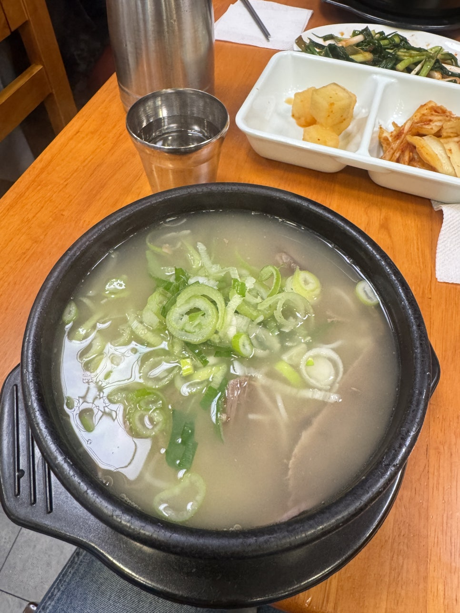

내 몸은 정말 내 것일까
엄마가 아침마다 건강프로를 너무 많이 봐서 이해하지 못하고 있었는데, 요즘 나의 최대 관심사는 건강이다. 내가 어디가 아프다거나 건강해지고 싶은 욕구가 크다? 이런 것은 아니다. 그런데 내 몸에 대해서 더 알고 싶고, 뭔가 좀 더 잘해주고 싶다(?)는 마음이라고 해야 할까. 나도 정확히 정의할 수는 없는 마음인데, 몸에 대해 이것저것 찾아 읽다 보니 이게 좀 복잡해졌다.
"내 몸 하나 건사하기 힘들다. 내 몸 내 꺼." 이러고 살았는데, 이놈의 것이 나만의 것이 아닌 것 같은 거다.
내 몸에 사는 것들의 숫자
그도 그럴 것이 나를 숙주 삼아 살고 있는 수많은 녀석들이 있다.
| 구분 | 개수 |
|---|---|
| 내 체세포 | 약 35조 개 |
| 내 몸에 사는 세균 (대부분 대장) | 38조 ~ 100조 마리 이상 |
| 미토콘드리아 (세포당 500~2000개) | 약 100경 개 |
한때 유행했던 "오조오억" 이런 게 큰 숫자도 아닌 거다. 더 경악할 것은 미토콘드리아의 숫자.
100경 = 1,000,000,000,000,000,000
지구 전체 모래 알갱이 수 정도란다. (참고로 일론 머스크 재산은 아직 2,000조가 되지 않음.)
얼마 전에 쇼츠에서 본, 소중한 백혈구가 나를 위해 나쁜 세균이랑 싸우는 모습은 나를 감동하게 했다. 나를 사랑해주는 것은 사람만이 아니었다는 안도감이 들기도 하고, 내 몸이 조금은 안쓰럽기도 했다.
가끔 몸에 해로운 것들 — 술 같은 것도 먹긴 하지만, 나이 먹고 나라도 나를 안 챙겨주면 누가 챙겨주나 싶다. 대체적으로 친절하게 대해주고 싶은 마음인 것이다.
미토콘드리아, 철, 그리고 활성산소
어머 너무 계속 딴소리를 했는데, 주제는 헌혈이다.
미토콘드리아 이야기를 했는데, 얘는 세포 내에서 포도당 등 영양분을 산화시켜 생명 활동의 필수 에너지원인 ATP(아데노신삼인산)를 생산하는 '세포 내 발전소'라고 정의된다. 즉 호흡을 통해 얻은 산소 + 영양분을 재료로 ATP를 만드는 소기관이다.
이 과정에서 일어나는 일
이 과정에서 과산화수소가 만들어지는데, 체내 철 농도가 너무 높으면 이 과산화수소가 활성산소로 전환된다. 과잉의 활성산소는 노화, 세포 손상을 일으켜 질환의 원인이 된다.
따라서 적절한 철 농도를 유지하는 것이 좋은데 —
- 여성의 경우 월경을 통한 철 배출이 가능
- 폐경 후 여성이나 남성은 과잉의 철을 배출하는 기전이 없음
혈청 페리틴(serum ferritin)을 검사하면 철 농도를 가늠할 수 있다고 한다.
그래서, 헌혈이다
이 때 효과적으로 철을 제거할 수 있는 방법이 있으니 — 바로바로 헌혈이다.
적혈구에 어마어마한 양의 철을 함유한 헤모글로빈이 있기 때문이다.
혈중 페리틴 농도가 100ng/ml 이상이면 헌혈을 하면 좋다고 한다.
나는 페리틴 농도를 재보진 않았지만, 고등학교 이후로 헌혈을 해보지 않았고 집 근처에 헌혈의 집이 있어서 가보았다. 피가 메인 토픽이라 (사진이) 벌겋다.
이 내용을 100% 맹신하는 것은 아니지만, 골수가 새로운 적혈구를 만들어줬으면 싶기도 하고, 식단을 하기도 하니까 혈액도 리뉴얼이 필요하지 않을까 싶은 마음에. 그리고 심지어 문화상품권 1만 원까지 획득했다.
기쁜 마음으로 헌혈을 하고, 양지설렁탕

기쁜 마음으로 헌혈을 하고 양지설렁탕을 먹었다.